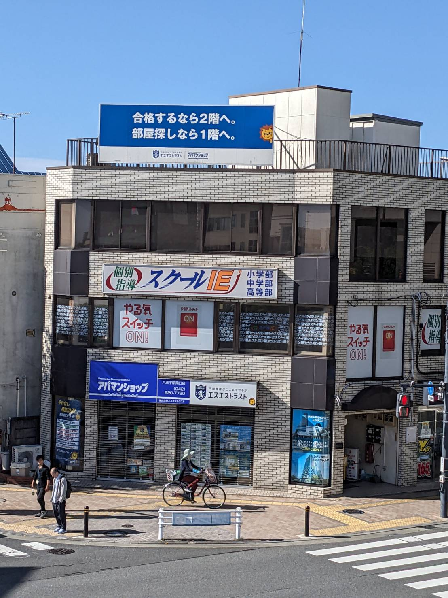
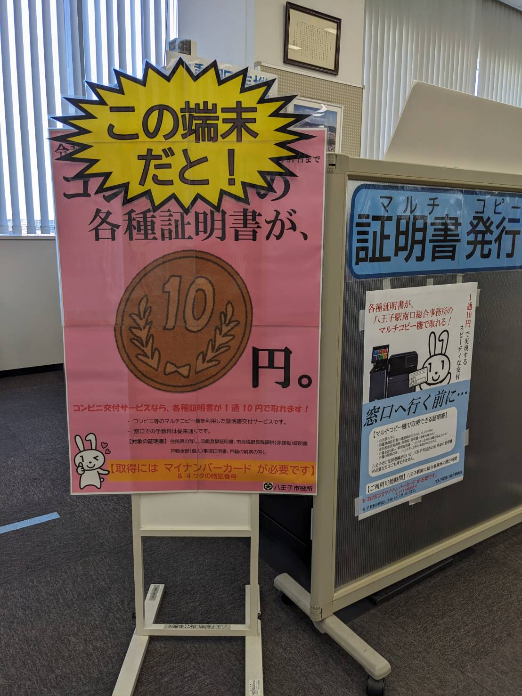
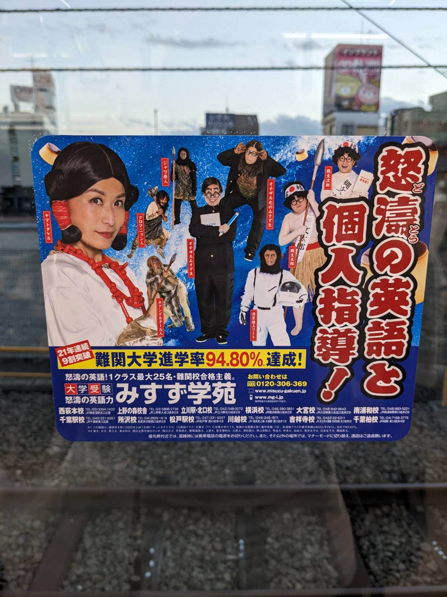

一階のアパマンショップ（不動産屋）と二階にある塾を同時に宣伝している看板
アパマンショップは主に八王子にこのような看板を多く設置しており、一つとして同じ看板がないことで有名
八王子駅南口にて発見

マイナンバーカードの利用によって各種証明書（住民票等）が近くのコンビニで10円で発行できることを宣伝している看板。
市役所にて発見。

みすず学苑という進学塾のもの。載っているキャラクターが少し奇妙なことで有名。
JR横浜線のドアにて発見